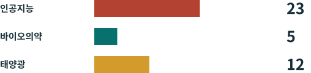

기술의 새로운 국경¶
중국 공고 제48호, 미국의 AI 수출 통제, 중국 공개 모델의 미래를 그림과 쉬운 말로 설명하는 책입니다.

조사판: 2026년 11월 2일. 현재 시행되는 의무, 제안된 조치, 우리의 분석을 구분합니다. 개별 거래를 승인하는 자료는 아닙니다.
두 나라, 서로 다른 관문¶
중국: 등록은 시행 중, 목록 개정은 의견 수렴 중. 10월 16일 공고는 AI 23개, 바이오의약 5개, 태양광 12개 등 40개 기술을 다룹니다. 수출 금지 14개와 제한 26개를 제안합니다. 대상 수출의 사전 등록은 당일 시작됐고 아직 끝나지 않은 수출도 포함합니다. 의견 수렴은 2026년 11월 15일까지입니다. CN48 CNQA
미국: 칩 통제는 시행 중이며 모델 규정은 문구와 집행을 함께 봐야 합니다. 첨단 AI 칩은 허가, 목적지, 구매자, 용도 확인이 필요합니다. 2026년 1월 15일부터 조건을 충족한 H200 등 칩의 미국발 중국·마카오 수출은 개별 심사가 가능합니다. 자동 승인은 아닙니다. AI 확산 규정은 공표된 규정에 남아 있으나 BIS는 집행하지 않겠다고 발표했습니다. GAO는 2026년 5월 그 정책의 절차를 문제 삼았습니다. US26 EAR742 USNE GAO26 EAR774
핵심 결론¶
공고는 중국 공개 모델을 전면 금지하지 않습니다. 초안은 오픈소스나 논문으로 이미 공개 영역에 들어간 AI 기술을 제외하며, 제한 기술의 새로운 오픈소스 수출에는 자동 허가 등의 편의를 제안합니다. 제외와 허가 절차는 다릅니다. 다른 법률까지 없어지는 것은 아닙니다. CN48 CN-A1 CNQA
이 책은 10개 장, 40개 기술 지도, 대화형 사례와 7개 언어 PDF를 제공합니다. 공식 첨부는 WPS이며 PDF는 현지 변환한 읽기용 사본입니다. 원래 폴더의 china_export_control.pdf는 별개의 오가노이드 연구 발표 자료이므로 근거로 쓰지 않습니다.